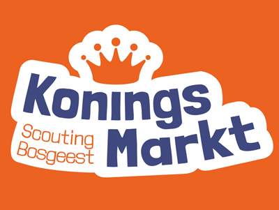
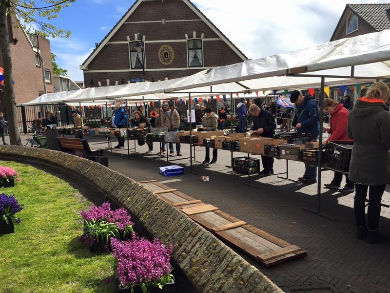

Koningsmarkt 2024
Informatie Koningsmarkt
Om de contributie zo laag mogelijk te houden, leuke activiteiten te ondernemen en het onderhoud van het clubhuis te bekostigen organiseert Scouting Bosgeest op 27 april weer de Koningsmarkt. Op Koningsdag staan de scouts rond de Witte Kerk met tientallen kramen in categorieën als: boeken, media, kunst en kitch, potten en tuin, meubels, wonen, keuken en speelgoed. Ook is er het kinderparadijs met activiteiten voor kinderen en volwassenen en staat de planten stand er weer met prachtige waar. Of komt u uw geluk beproeven op de EURO-loterij.

Heeft u spullen voor de markt?
Breng uw spullen dan naar ons clubhuis!
Dit kan iedere zaterdag tussen 11:00 en 15:00 en op maandag en donderdag van 19:00 - 20:30 uur.
- Maandag 18 maart 19:00 - 20:30 uur
- Donderdag 21 maart 19:00 - 20:30 uur
- Zaterdag 23 maart 11:00 - 15:00 uur
- Maandag 25 maart 19:00 - 20:30 uur
- Donderdag 28 maart 19:00 - 20:30 uur
- Zaterdag 30 maart 11:00 - 15:00 uur
- Maandag 1 april 19:00 - 20:30 uur
- Donderdag 4 april 19:00 - 20:30 uur
- Zaterdag 6 april 11:00 - 15:00 uur
- Maandag 8 april 19:00 - 20:30 uur
- Donderdag 11 april 19:00 - 20:30 uur
- Zaterdag 13 april 11:00 - 15:00 uur
- Maandag 15 april 19:00 - 20:30 uur
- Donderdag 18 april 19:00 - 20:30 uur
- Zaterdag 20 april 11:00 - 15:00 uur
Het adres van het clubhuis van Scouting Bosgeest is Van der Weijdenlaan 2B. Ingang tegenover slager Klein.
Welke spullen zijn welkom?
Scouting is blij met de spullen die u weggeeft. Denk aan spullen als servies, bloempotten, speelgoed, kleding, elektronica en kleine meubels.
Wij vragen u alleen spullen te geven die schoon, heel en/of werkend zijn. Daarnaast kunnen wij, in verband met beperkte opslag en transport, alleen kleine en lichte spullen aannemen. Surfplanken, grote meubels, zoals kasten en bedden, witgoed en matrassen verkopen wij niet. Wij behouden ons altijd het recht voor om spullen te weigeren en door te verwijzen naar een kringloopwinkel of de vuilstort.
Heeft u nog vragen?
Mail dan naar koningsmarkt@bosgeest.nl of bel naar 06-50270068 voor meer informatie
